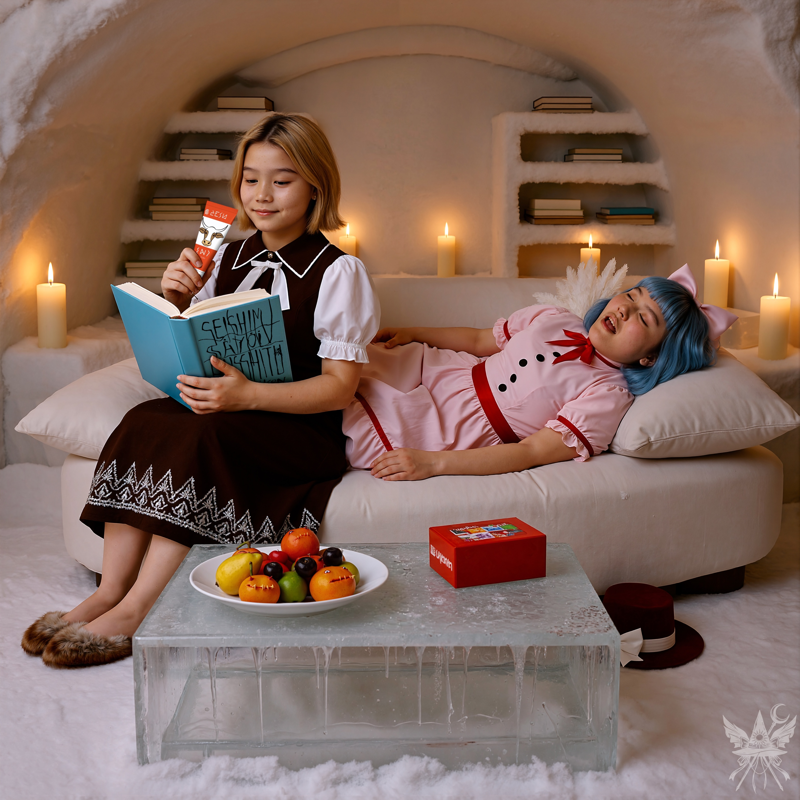
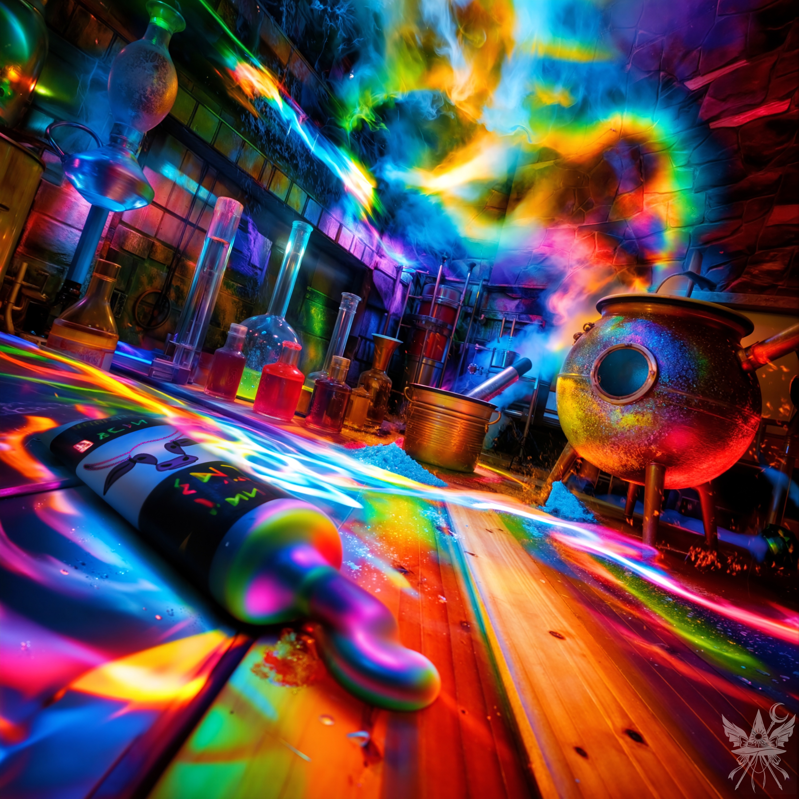

肺の奥まで凍てつくような極寒の空気の中、暖色の炎が揺らめき、硬質な氷の壁に柔らかな影を落としている。空間を支配するのは、心地よい静寂と、決闘の余熱を完全に冷ましきった弛緩した空気だ。分厚い氷のテーブルを挟み、魔女たちの極めて私的な時間が流れていた。
「どう？ あいつのこと、しっかり凍らせてやったでしょ？」
「自分だってギリギリのセッションだったくせに！ あの異邦人さん、けっこういいビート刻んでたわよ」
「……まあ、悪くはなかったわね」
氷の魔女はため息をついた。
「で、戦利品は？」
ユキは、手元の奇妙なチューブをくるくると指先で弄んでいた。冷たい表面の奥に、粘り気のある甘い匂いが封じられているのを感じ取る。
「これ、何なのかしら。薬の材料？ マイ、あの子なんて言ってたっけ？」
「なんか、解放するとか」
マイはだるそうに答えて、ソファにどさっと寝転がり、肉厚の果物にかじりついた。
「何かを解放するんだって。……あの弱虫に何を期待しろっていうのよ！」
「そう言わないの。私だって、あの子と似たようなもんなんだから」
ユキは手の中でチューブを転がし続けた。だんだん、ほんのり温かくなってくる。
「ええと……なんて言ってたっけ？ テトラヒドロ……あ、そう！ テトラヒドロカンナビノール！」
「よく覚えてるわね、ユキ」
白い魔女が、なんだか毒のある言い方をした。
「で、それが何なのか、わかってるわけ？」
「なんか、どこかのジャムセッションで聞いたような響きなのよね……」
「右の棚に、青くて分厚い本があるでしょ。あれで調べれば」
いかにも物知りぶった偉そうな口ぶりだが、ユキはとっくに慣れっこだ。さっさと目当ての本を引っぱり出して、ページをめくる。
「えーと……テバコン、テノシクリジン……。あ、ビンゴ！ テトラヒドロカンナビノール！ カンナビス・サティバっていう植物に多く含まれてる成分らしいわ。ねえ、マイ、これって最高のスパイスにならない？」
返事はなかった。規則正しい静かな寝息だけが、冷気に溶けていく。マイはすでに、深い意識の底へと沈降していた。
残されたユキの胸の内で、一人静かに好奇心の熱が発火する。
（……そういえば、この植物のビート、どこかで味わったことがあるわ……）
脳裏に、あの狡猾な悪魔の顔がフラッシュバックする。ルイズがかつて人間の世界へ「出張」に出向いた際、ひどく得意げな顔で持ち帰ってきた土産の記憶。
（……確か、『オランダ』とかいう場所。あの時のハーブが、まだ残ってるはず……！）
居ても立っても居られず、ユキは分厚い氷の板をどかし、地下室へと続く階段を弾むような足取りで駆け下りた。冷え切った暗闇の中、オイルランプの火を灯す。そこは、年代物の素材が眠る狂気のアーカイブだ。足元の箱を蹴飛ばしそうになりながら、目当ての熱源を探し回る。
（……えーと、アムステルダム……アムス、テ、ル、ダム……。リズムに乗りにくい名前ね。あ、見っけ！）
手に取った小袋の中には、ひからびた緑茶のような乾燥ハーブが眠っていた。
静寂に包まれた居住空間とは打って変わり、奥の実験室は常に熱とエネルギーが飽和している。透明な釜の中で、湯がぐらぐらと沸騰のビートを刻んでいた。
ユキは迷うことなくチューブの封を切り、粘り気のあるペーストを沸騰した湯の中へ絞り出す。立ち昇る強烈な甘い匂いに、小袋の中の乾燥ハーブを一気に放り込んだ。
（ほんのちょっとの実験よ。湿度はパーフェクト、炎の色も計算どおり……っと！）
＊＊＊

SYSTEM ERROR: SENSORY OVERLOAD
ばりばり極彩色のネオンが明滅しとるんじゃけど、だーれもおらんで、赤や紫のガスがごーとごーと言うとるんよ。
> WALK FORWARD
次の瞬間、金属光沢の釜ん中に足ば突っ込んでしもて、
「あだ！」
と思ったっちゃ。痛覚パラメータが完全にバグっとるばい。
> LOOK AROUND
ほんで、目が虹色の煙に慣れてくると、手前の木目の床に錬金術の机が見えるんやわ。強烈な明暗のコントラストで視界がチカチカするっしょ。
> OPEN DRAWER
引き出し開けたら、黒いラベル帯に牛の顔が描かれとる不気味なTUBEが入っとるんよ。蛍光色の記号が浮かび上がっとるべ。
（夢ちゃうんや！ マジもんのクエストやき！）
恐る恐る手に取って、> EXAMINE TUBE ってやってん。
--- OBJECT: 「異世界の練乳 (Condensed Milk)」---
STATUS: OPENED
CONTENTS: 虹色に発光する粘性ペースト
VOLUME: 50%
とりあえず、インベントリに突っ込んだんよ。
> TAKE CONDENSED MILK
--- 持ち物LISTに追加：「Condensed Milk」(残り50%) ---
残りの半分を探さんといかんのんじゃけど、あたりは人工的で強烈な甘い匂いと化学薬品の悪臭がチャンポンになっとるさかい。
> SEARCH "残りのCondensed Milk"
--- ERROR: OBJECT NOT FOUND ---
ほんで、くんくん嗅ぎ回ったら、激しく煙を吹く釜と、赤やピンクに発光する液体の入った割れたGlassを見つけたばい。
> TAKE 悪臭を放つ煮汁の入った釜
取ろうとしたんやけど、割れたGlassにザクッと当たってしもたんよ。手から血がDARA-DARA流れよるし、HPゲージがマッハで減りよるっちゃんね。拭こうとしたら、なおさら手を傷つけるべさ。
> USE 薬草
--- INVENTORY ERROR: ITEM NOT EQUIPPED ---
要るべさ：治療用の薬草だっちゃ！！
「ちぇっ！ わやだべ！」
「この極彩色のラボ、絶対友達ちゃうわ」
と思って、荒い石積みの壁にあるDOORに近づくんやけど。
> OPEN DOOR
--- ACCESS DENIED ---
つまり「アクセス拒否」だべ。フラグが立っとらんのよ。
DOORに対して「攻撃」をするんばってん、
> ATTACK DOOR WITH コブシ
--- ROLL: 2 ... FAILED. DAMAGE 0. ---
--- ACCESS DENIED ---
やっぱりあかんか。出口がねーことに気付くんよ。絶望のデバフがかかったばい。
（このDOOR、ぶち破ったろか！）
と思うんばい。
「急がんでいいさ！」
突如、壁の隙間の濃いキャストシャドウが返事をしてるみたいだど。サン値がゴリゴリ削れるっしょ。
考えるっしょ。短くて永遠みてぇなバグった時間が経つんだけど、悪臭を放つ煮汁の入った釜の「ごー」っつー音が、だんだん
（こいつぁ、この世界で唯一の友達かもしんねぇ… ）
って思うばい。釜の丸い窓
（ポートホール）
に顔を近づけてみたら、なんか落ち着くさかい。
> CHECK STATUS
`--- 持ち物リスト：「Condensed Milk」
50% ---`
--- MENTAL STATUS: CRITICAL ---
はぁ～…、とため息ついて、床に散乱する白い粉の上に座り込んで待つしかねぇなぁ。極彩色の光の乱反射の中で、気が遠くなるようなロード時間が過ぎていく。
> EVENT TRIGGERED
ゆっくりとDOORが開くがね。
目の前には、もう、なんちゅうか、恐ろしい怪物がポップしたわけさー。
恐ろしい怪物はムチをGETするなり、いきなりわいにATTACKしてきたとたい！
> ENEMY ATTACKS!
「うぎゃー！」
--- ALARM: HEALTH CRITICAL ---
健康チェックやばい。怪物に「失せろ！」と言いたいけど、舌が口の中でバグって動かんばい。COMMAND ERROR。ほぼゲームオーバーだっちゃ。
恐ろしい怪物が言うとった。
「……ユキ、またラリってるの？」
[SYSTEM ALERT: 音響兵器デプロイ完了]
▼ 本章の絶望を1000%味わうための専用聴覚データ ▼
■ YouTube：『Pandemonium SKA （パンデモニウム・スカ）』